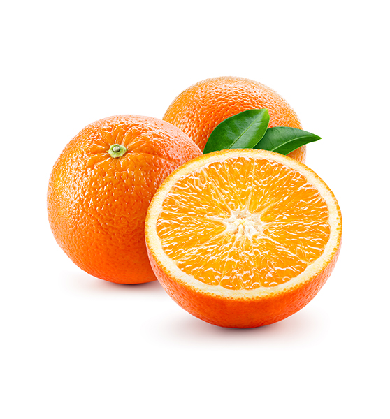
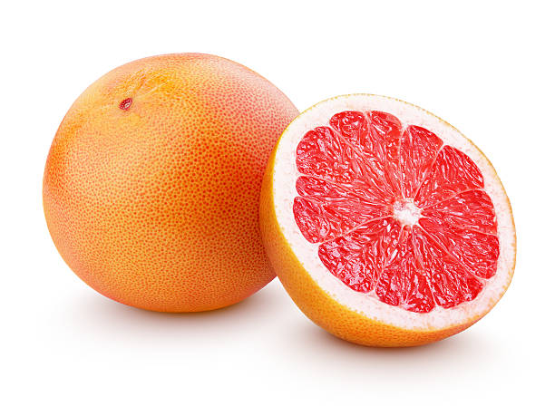

Mango
Orange
Pineapple
Papaya
Grapefruit
Pear
Mango
Mangoes are juicy stone fruit (drupe) from numerous species of tropical trees belonging to the flowering plant genus mangifera.Mango
Mangoes are juicy stone fruit (drupe) from numerous species of tropical trees belonging to the flowering plant genus mangifera. Orange
The average orange weighs 5 oz. (140 g). Like all citrus fruits, oranges are protected externally by a thick crust, which makes them quite resistant to transport.
Pineapple
Pineapple is a tropical fruit that are cone shaped with a waxy tough skin that has small spines protruding from it. The inside flesh is yellow with a hard core in the middle. The leafy top, hard skin and core are not eaten.Papaya
Papaya, also called papaw or pawpaw, succulent fruit of a large plant of the family Caricaceae. Though its origin is rather obscure, the papaya may represent the fusion of two or more species of Carica native to Mexico and Central America. Grapefruit
The grapefruit is a fruit with a spherical shape, slightly flattened, with a pale yellow or reddish smooth or rough skin. It is consumed mainly as fresh fruit, and has numerous digestive, stomach and antiseptic qualities.Pear
Pear are fruit produced and consumed around the world, growing on a tree and harvested in late summer into mid-autumn. The pear tree and shrub are a species of genus Pyrus /ˈpaɪrəs/, in the family Rosaceae, bearing the pomaceous fruit of the same name. Several species of pears are valued for their edible fruit and juices, while others are cultivated as trees.